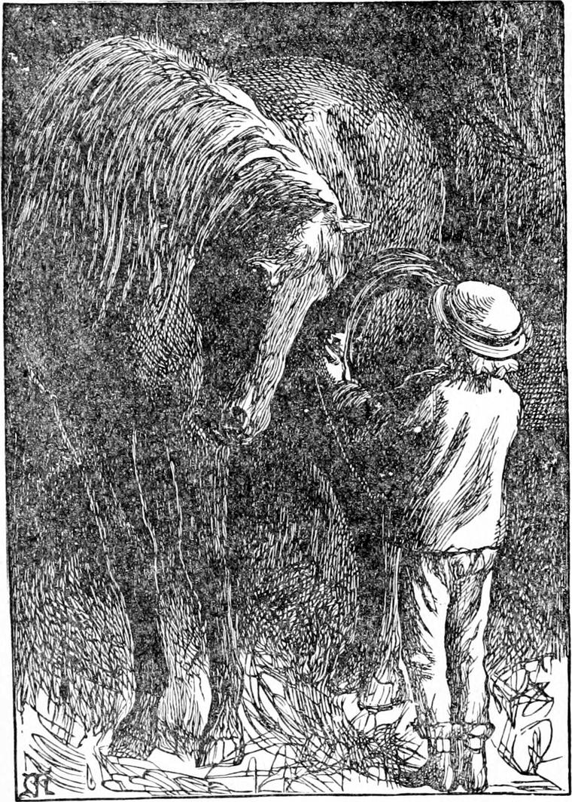
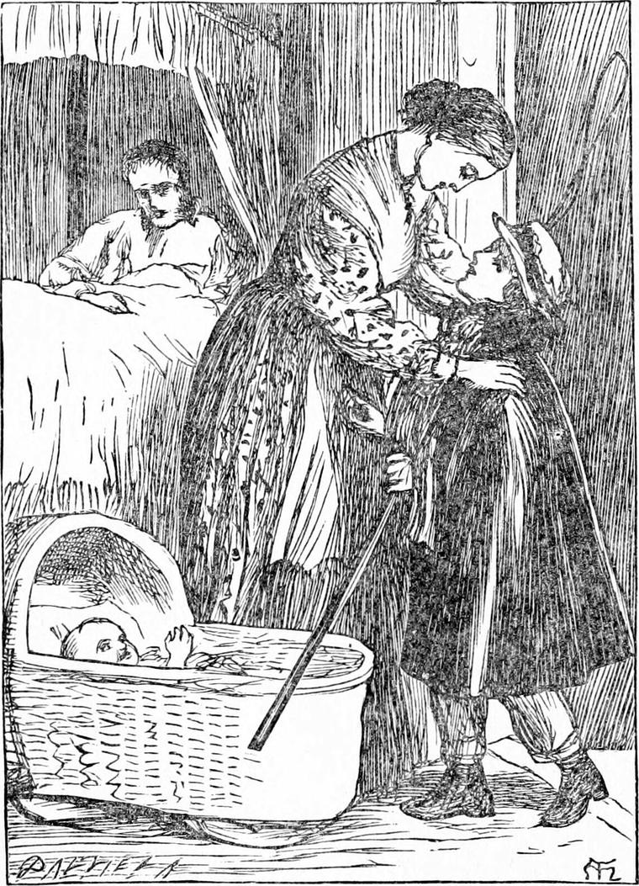

HE GOT up in the morning as soon as he heard the men moving in the yard. He tucked in his little brother so that he could not tumble out of bed, and then went out, leaving the door open, so that if he should cry his mother might hear him at once. When he got into the yard he found the stable-door just opened.
“I'm the early bird, I think,” he said to himself. “I hope I shall catch the worm.”
He would not ask any one to help him, fearing his project might meet with disapproval and opposition. With great difficulty, but with the help of a broken chair he brought down from his bedroom, he managed to put the harness on Diamond. If the old horse had had the least objection to the proceeding, of course he could not have done it; but even when it came to the bridle, he opened his mouth for the bit, just as if he had been taking the apple which Diamond sometimes gave him. He fastened the cheek-strap very carefully, just in the usual hole, for fear of choking his friend, or else letting the bit get amongst his teeth. It was a job to get the saddle on; but with the chair he managed it. If old Diamond had had an education in physics to equal that of the camel, he would have knelt down to let him put it on his back, but that was more than could be expected of him, and then Diamond had to creep quite under him to get hold of the girth. The collar was almost the worst part of the business; but there Diamond could help Diamond. He held his head very low till his little master had got it over and turned it round, and then he lifted his head, and shook it on to his shoulders. The yoke was rather difficult; but when he had laid the traces over the horse's neck, the weight was not too much for him. He got him right at last, and led him out of the stable.

By this time there were several of the men watching him, but they would not interfere, they were so anxious to see how he would get over the various difficulties. They followed him as far as the stable-door, and there stood watching him again as he put the horse between the shafts, got them up one after the other into the loops, fastened the traces, the belly-band, the breeching, and the reins.
Then he got his whip. The moment he mounted the box, the men broke into a hearty cheer of delight at his success. But they would not let him go without a general inspection of the harness; and although they found it right, for not a buckle had to be shifted, they never allowed him to do it for himself again all the time his father was ill.
The cheer brought his mother to the window, and there she saw her little boy setting out alone with the cab in the gray of morning. She tugged at the window, but it was stiff; and before she could open it, Diamond, who was in a great hurry, was out of the mews, and almost out of the street. She called “Diamond! Diamond!” but there was no answer except from Jack.
“Never fear for him, ma'am,” said Jack. “It 'ud be only a devil as would hurt him, and there ain't so many o' them as some folk 'ud have you believe. A boy o' Diamond's size as can 'arness a 'oss t'other Diamond's size, and put him to, right as a trivet—if he do upset the keb—'ll fall on his feet, ma'am.”
“But he won't upset the cab, will he, Jack?”
“Not he, ma'am. Leastways he won't go for to do it.”
“I know as much as that myself. What do you mean?”
“I mean he's a little likely to do it as the oldest man in the stable. How's the gov'nor to-day, ma'am?”
“A good deal better, thank you,” she answered, closing the window in some fear lest her husband should have been made anxious by the news of Diamond's expedition. He knew pretty well, however, what his boy was capable of, and although not quite easy was less anxious than his mother. But as the evening drew on, the anxiety of both of them increased, and every sound of wheels made his father raise himself in his bed, and his mother peep out of the window.
Diamond had resolved to go straight to the cab-stand where he was best known, and never to crawl for fear of getting annoyed by idlers. Before he got across Oxford Street, however, he was hailed by a man who wanted to catch a train, and was in too great a hurry to think about the driver. Having carried him to King's Cross in good time, and got a good fare in return, he set off again in great spirits, and reached the stand in safety. He was the first there after all.
As the men arrived they all greeted him kindly, and inquired after his father.
“Ain't you afraid of the old 'oss running away with you?” asked one.
“No, he wouldn't run away with me,” answered Diamond. “He knows I'm getting the shillings for father. Or if he did he would only run home.”
“Well, you're a plucky one, for all your girl's looks!” said the man; “and I wish ye luck.”
“Thank you, sir,” said Diamond. “I'll do what I can. I came to the old place, you see, because I knew you would let me have my turn here.”
In the course of the day one man did try to cut him out, but he was a stranger; and the shout the rest of them raised let him see it would not do, and made him so far ashamed besides, that he went away crawling.
Once, in a block, a policeman came up to him, and asked him for his number. Diamond showed him his father's badge, saying with a smile:
“Father's ill at home, and so I came out with the cab. There's no fear of me. I can drive. Besides, the old horse could go alone.”
“Just as well, I daresay. You're a pair of 'em. But you are a rum 'un for a cabby—ain't you now?” said the policeman. “I don't know as I ought to let you go.”
“I ain't done nothing,” said Diamond. “It's not my fault I'm no bigger. I'm big enough for my age.”
“That's where it is,” said the man. “You ain't fit.”
“How do you know that?” asked Diamond, with his usual smile, and turning his head like a little bird.
“Why, how are you to get out of this ruck now, when it begins to move?”
“Just you get up on the box,” said Diamond, “and I'll show you. There, that van's a-moving now. Jump up.”
The policeman did as Diamond told him, and was soon satisfied that the little fellow could drive.
“Well,” he said, as he got down again, “I don't know as I should be right to interfere. Good luck to you, my little man!”
“Thank you, sir,” said Diamond, and drove away.
In a few minutes a gentleman hailed him.
“Are you the driver of this cab?” he asked.
“Yes, sir” said Diamond, showing his badge, of which, he was proud.
“You're the youngest cabman I ever saw. How am I to know you won't break all my bones?”
“I would rather break all my own,” said Diamond. “But if you're afraid, never mind me; I shall soon get another fare.”
“I'll risk it,” said the gentleman; and, opening the door himself, he jumped in.
He was going a good distance, and soon found that Diamond got him over the ground well. Now when Diamond had only to go straight ahead, and had not to mind so much what he was about, his thoughts always turned to the riddle Mr. Raymond had set him; and this gentleman looked so clever that he fancied he must be able to read it for him. He had given up all hope of finding it out for himself, and he could not plague his father about it when he was ill. He had thought of the answer himself, but fancied it could not be the right one, for to see how it all fitted required some knowledge of physiology. So, when he reached the end of his journey, he got down very quickly, and with his head just looking in at the window, said, as the gentleman gathered his gloves and newspapers:
“Please, sir, can you tell me the meaning of a riddle?”
“You must tell me the riddle first,” answered the gentleman, amused.
Diamond repeated the riddle.
“Oh! that's easy enough,” he returned. “It's a tree.”
“Well, it ain't got no mouth, sure enough; but how then does it eat all day long?”
“It sucks in its food through the tiniest holes in its leaves,” he answered. “Its breath is its food. And it can't do it except in the daylight.”
“Thank you, sir, thank you,” returned Diamond. “I'm sorry I couldn't find it out myself; Mr. Raymond would have been better pleased with me.”
“But you needn't tell him any one told you.”
Diamond gave him a stare which came from the very back of the north wind, where that kind of thing is unknown.
“That would be cheating,” he said at last.
“Ain't you a cabby, then?”
“Cabbies don't cheat.”
“Don't they? I am of a different opinion.”
“I'm sure my father don't.”
“What's your fare, young innocent?”
“Well, I think the distance is a good deal over three miles—that's two shillings. Only father says sixpence a mile is too little, though we can't ask for more.”
“You're a deep one. But I think you're wrong. It's over four miles—not much, but it is.”
“Then that's half-a-crown,” said Diamond.
“Well, here's three shillings. Will that do?”
“Thank you kindly, sir. I'll tell my father how good you were to me—first to tell me my riddle, then to put me right about the distance, and then to give me sixpence over. It'll help father to get well again, it will.”
“I hope it may, my man. I shouldn't wonder if you're as good as you look, after all.”
As Diamond returned, he drew up at a stand he had never been on before: it was time to give Diamond his bag of chopped beans and oats. The men got about him, and began to chaff him. He took it all good-humouredly, until one of them, who was an ill-conditioned fellow, began to tease old Diamond by poking him roughly in the ribs, and making general game of him. That he could not bear, and the tears came in his eyes. He undid the nose-bag, put it in the boot, and was just going to mount and drive away, when the fellow interfered, and would not let him get up. Diamond endeavoured to persuade him, and was very civil, but he would have his fun out of him, as he said. In a few minutes a group of idle boys had assembled, and Diamond found himself in a very uncomfortable position. Another cab drew up at the stand, and the driver got off and approached the assemblage.
“What's up here?” he asked, and Diamond knew the voice. It was that of the drunken cabman.
“Do you see this young oyster? He pretends to drive a cab,” said his enemy.
“Yes, I do see him. And I sees you too. You'd better leave him alone. He ain't no oyster. He's a angel come down on his own business. You be off, or I'll be nearer you than quite agreeable.”
The drunken cabman was a tall, stout man, who did not look one to take liberties with.
“Oh! if he's a friend of yours,” said the other, drawing back.
Diamond got out the nose-bag again. Old Diamond should have his feed out now.
“Yes, he is a friend o' mine. One o' the best I ever had. It's a pity he ain't a friend o' yourn. You'd be the better for it, but it ain't no fault of hisn.”
When Diamond went home at night, he carried with him one pound one shilling and sixpence, besides a few coppers extra, which had followed some of the fares.
His mother had got very anxious indeed—so much so that she was almost afraid, when she did hear the sound of his cab, to go and look, lest she should be yet again disappointed, and should break down before her husband. But there was the old horse, and there was the cab all right, and there was Diamond in the box, his pale face looking triumphant as a full moon in the twilight.
When he drew up at the stable-door, Jack came out, and after a good many friendly questions and congratulations, said:
“You go in to your mother, Diamond. I'll put up the old 'oss. I'll take care on him. He do deserve some small attention, he do.”
“Thank you, Jack,” said Diamond, and bounded into the house, and into the arms of his mother, who was waiting him at the top of the stair.
The poor, anxious woman led him into his own room, sat down on his bed, took him on her lap as if he had been a baby, and cried.
“How's father?” asked Diamond, almost afraid to ask.
“Better, my child,” she answered, “but uneasy about you, my dear.”
“Didn't you tell him I was the early bird gone out to catch the worm?”
“That was what put it in your head, was it, you monkey?” said his mother, beginning to get better.

“That or something else,” answered Diamond, so very quietly that his mother held his head back and stared in his face.
“Well! of all the children!” she said, and said no more.
“And here's my worm,” resumed Diamond.
But to see her face as he poured the shillings and sixpences and pence into her lap! She burst out crying a second time, and ran with the money to her husband.
And how pleased he was! It did him no end of good. But while he was counting the coins, Diamond turned to baby, who was lying awake in his cradle, sucking his precious thumb, and took him up, saying:
“Baby, baby! I haven't seen you for a whole year.”
And then he began to sing to him as usual. And what he sang was this, for he was too happy either to make a song of his own or to sing sense. It was one out of Mr. Raymond's book.
THE TRUE STORY OF THE CAT AND THE FIDDLE
The cat and the fiddle!
He played such a merry tune,
That the cow went mad
With the pleasure she had,
And jumped right over the moon.
But then, don't you see?
Before that could be,
The moon had come down and listened.
The little dog hearkened,
So loud that he barkened,
“There's nothing like it, there isn't.”
Went the cat and the fiddle,
Hey diddle, diddle, dee, dee!
The dog laughed at the sport
Till his cough cut him short,
It was hey diddle, diddle, oh me!
And back came the cow
With a merry, merry low,
For she'd humbled the man in the moon.
The dish got excited,
The spoon was delighted,
And the dish waltzed away with the spoon.
Coming back too soon
From the famous town of Norwich,
Caught up the dish,
Said, “It's just what I wish
To hold my cold plum-porridge!”
Gave the cow a rat-tat,
Flung water on the cat,
And sent him away like a rocket.
Said, “O Moon there you are!”
Got into her car,
And went off with the spoon in his pocket
The wet cat and wet fiddle,
They made such a caterwauling,
That the cow in a fright
Stood bolt upright
Bellowing now, and bawling;
And the dog on his tail,
Stretched his neck with a wail.
But “Ho! ho!” said the man in the moon—
“No more in the South
Shall I burn my mouth,
For I've found a dish and a spoon.”